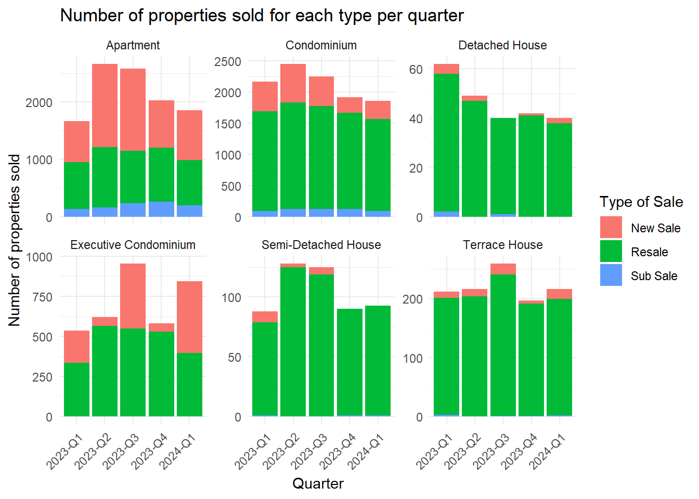

pacman::p_load(ggrepel, patchwork, ggthemes, hrbrthemes,
tidyverse, ggridges, ggdist, colorspace)Project 2
1. Overview
1.1 The task
Assuming the role of a graphical editor of a median company, the purpose of this data visualization exercise is to prepare minimum two and maximum three data visualizations to reveal interesting insights on the private residential market and sub-markets of Singapore for the 1st quarter of 2024 and prior periods.
1.2 The data
For this exercise and to accomplish the task, transaction data of REALIS will be used, which provides comprehensive and up-to-date statistics on the property market in Singapore.
A complete set of the private residential property transaction data from 1st January 2023 to 31st March 2024
2. Loading the needed libraries and data preparation
2.1 Loading the packages
For this Take-home exercise 2, I am planning to use libraries that my classmate has put into their code below:
tidyverse: The tidyverse is an opinionated collection of R packages designed for data science.
patchwork: a package to make it simple to combine separate ggplots into the same graphic
ggrepel: a package to provide geoms for ggplot2 to repel overlapping text labels
ggthemes: a package to provide some extra themes, geoms, and scales for ‘ggplot2’.
ggridges: a package for Ridgeline plots, which are partially overlapping line plots that create the impression of a mountain range.
ggdist: an R package that provides a flexible set of ggplot2 geoms and stats designed especially for visualizing distributions and uncertainty which will assist with ggridges package
colorspace: provides a broad toolbox for selecting individual colors or color palettes, manipulating these colors, and employing them in various kinds of visualizations.
The Code:
2.2 Loading the data
For the take-home exercise purpose I will follow me classmate data steps:
realis_data_2023Q1 <- read_csv("data/ResidentialTransaction20240308160536.csv")
realis_data_2023Q1 <- mutate(realis_data_2023Q1, Quarter='2023-Q1')
realis_data_2023Q2 <- read_csv("data/ResidentialTransaction20240308160736.csv")
realis_data_2023Q2 <- mutate(realis_data_2023Q2, Quarter='2023-Q2')
realis_data_2023Q3 <- read_csv("data/ResidentialTransaction20240308161009.csv")
realis_data_2023Q3 <- mutate(realis_data_2023Q3, Quarter='2023-Q3')
realis_data_2023Q4 <- read_csv("data/ResidentialTransaction20240308161109.csv")
realis_data_2023Q4 <- mutate(realis_data_2023Q4, Quarter='2023-Q4')
realis_data_2024Q1 <- read_csv("data/ResidentialTransaction20240414220633.csv")
realis_data_2024Q1 <- mutate(realis_data_2024Q1, Quarter='2024-Q1')
realis_data <- rbind(realis_data_2023Q1, realis_data_2023Q2, realis_data_2023Q3, realis_data_2023Q4, realis_data_2024Q1)
realis_data$Month <- substr(realis_data$`Sale Date`,3,6)3. Data Visualization critique and make over
3.1 The original design
This original design was taken from my classmate submission Take-home Exercise 1
ggplot(realis_data, aes(x = Quarter, fill =`Type of Sale`)) +
geom_bar() +
theme_minimal() +
theme(axis.text.x = element_text(angle = 45, hjust = 1)) +
facet_wrap(~`Property Type`,scales = "free_y") +
ggtitle(label = "Number of properties sold for each type per quarter") + ylab("Number of properties sold") + xlab("Quarter")
Observations
From the data visualizations above, here are my starting observations
- This graph purpose seems to be to showcase the number of properties sold for each
Type of SaleperProperty TypeperQuarter. - The
Property Typeis separated into 2 rows grids - Different color theme representing different
Type of Sale.
3.2 Critique of the original design
Plot size: the plot size is a bit small.
Scale of measurement: since the different
Property Typegrid are put together this create an illusion that their scale should be the same. However, in actual fact, the plot scale is all over the place and create a misleading visualization of the actual sales for eachProperty Type. It would also be nice if we could have y axes on one side of the plot only to show that they are of the same scale2 rows grids: The
Property Typeseparated into 2 rows grids in itself is not really a problem. However, for me personally, I think it would be nice if we could put them on the same row for easier comparison and also since there are only 6Property Type, we could manipulate the plot to make it fit somehowThe label: Number of properties sold for each type per quarter is missing the
Type of Salepart of the graph.Grid separation: it woule be nice if I could have a line or box to separate the grid so viewer could separate between which
Property Typethey are looking atThe legends: somehow the legend is taking a huge portion of the plot (approximately 1/4), this feels like such a waste of space and make it visually unattractive in a sense. It could be due to my classmate using the
theme_minimal(), using a different theme and adjusting the legend position to make more space for the actual plot may make a big different here.
3.3 Make over of the original design.
With the above 3 critiques made, I will go into details below on what I plan to do with the original design to address each point. Then, I will show the final code and the alternative design
Plot size:
I will be adjusting the size of the plot by putting some adjustment to the R code chunk using {r fig.height = 8, fig.width = 18} instead of {r}
Scale of measurement:
This is actually quite an easy fix, by using the Cartesian coordinates via coord_cartesian() we could adjust the limits for the y axes and preventing the plot. With the knowledge of the original plot that the limit of y fall somewhere between 0 and 2600, I could just add in coord_cartesian(ylim=c(0,2600))
2 rows grids:
The original code for creating the multifaceted facet_wrap(~Property Type,scales = “free_y”). However, as mentioned, for comparison purpose, I prefer if they could be on the same row with the same scale. Therefore, I will be replacing the above line of code with facet_wrap(~Property Type, nrow = 1) instead
The label:
I will be renaming the plot to Number of properties sold for each Type of Sale per Property Type per Quarter.
Grid separation:
Another easy change we just need to adjust the panel using panel.border argument of the gglot2 theme() here. For this purpose, I will be using
theme(panel.border = element_rect(color = “grey10”, linetype = “solid”, linewidth = 1)
The legends
So for this part, there is a lot of things to make adjustment here since I will be using a different theme, theme_economist() to be specific. With this theme changes, I will be adjust a multitude of arguments of the of the gglot2 theme() to adjust both the text size as well as the margin between the text and the plot. These arguments include axis.text, axis.title, title, strip.text, axis.title.y, axis.title.x
Final Result
ggplot(realis_data, aes(x = Quarter,
fill =`Type of Sale`)) +
geom_bar() +
coord_cartesian(ylim=c(0,2600)) +
facet_wrap(~`Property Type`, nrow = 1) +
theme_economist() +
ggtitle(label = "Number of properties sold for each Type of Sale per Property Type per Quarter") +
ylab("Number of properties sold") +
xlab("Quarter") +
theme(axis.text=element_text(size = 9),
axis.title = element_text(size = 15),
title = element_text(size = 15,
margin = margin(b = 15,)),
strip.text = element_text(margin = margin(b = 15)),
axis.title.y = element_text(margin = margin(r = 15)),
axis.title.x = element_text(margin = margin(t = 15)),
panel.border = element_rect(color = "grey10",
linetype = "solid",
linewidth = 1))Clarity Improvements
Plot size and font size and other margin are adjusted to mae sure no overlapping of texts
Consistent scale of y-axis allows fair comparisons of properties sales and patterns across different
Property Type, which is especially important since the sales for differentProperty Typediffer greatly.The title has been change to reflect correctly the visualization being made
Legend is adjusted to the top, creating more space for the actual plot.
For readability sake, I have adjust the x-axes text to be horizontal instead of slanted like the original design
3.4 Critique of the make over of the original design
So the resulting plot of the make over of the original design seems to address the critiques made originally. However, I think this design could be improve event further. One critique I want to make here is that since the scale is 0 to 2600, it maybe too big to show the “Sub Sale” and “New Sale” of some of the Property Type. In addition, since this is a stacked plot, it is a bit difficult if viewer want to see the changes of the different Type of Sale over time.
Therefore, I thought to myself what if I could separate the Type of Sale as well and hence reduce the scale of count so the missing “Sub Sale” and “New Sale” could be shown as well.
3.5 The further make over
It is actually quite simple to separate the Type of Sale. However, instead of using the facet_wrap(), I will switch to using facet_grid().
Simply replacing facet_wrap(~Property Type, nrow = 1) with facet_grid(cols = vars(Property Type), rows = vars(Type of Sale)), and also removing fill =Type of Sale from ggplot since we will not really need the color to show different Type of Sale
Final Result
ggplot(realis_data, aes(x = Quarter)) +
geom_bar(fill = "lightblue4") +
coord_cartesian(expand = TRUE,
ylim = c(0,1680)) +
facet_grid(cols = vars(`Property Type`),
rows = vars(`Type of Sale`)) +
theme_economist() +
ggtitle(label = "Number of properties sold for each Type of Sale per Property Type per Quarter") +
ylab("Number of properties sold") +
xlab("Quarter") +
theme(axis.text=element_text(size = 9),
axis.title = element_text(size = 15),
title = element_text(size = 15,
margin = margin(b = 15,)),
strip.text = element_text(margin = margin(b = 10,
l = 10)),
strip.text.y.right = element_text(angle = 0),
axis.title.y = element_text(margin = margin(r = 15)),
axis.title.x = element_text(margin = margin(t = 15)),
panel.border = element_rect(color = "grey10",
linetype = "solid",
linewidth = 1))The resulting plot seems to be doing better. However, some smaller count property type sale is still nowhere to be seen and is negligible.
4. Thoughts and learning points
Thoughts
To be honest the above graph is actually not my final idea of the plot. Due to the limitation of time to work on this exercise, I have not figured out on how to put a reference line on to the plot to show the average sales per Property Type per Quarter for each Type of Sale. For the final product, I actually want something that looks like the Tableau plot I created below
With this design, even if the smaller count property type sale is still nowhere to be seen the average line would help visualize the average number over the period instead.
Learning points:
This exercise could be consider part 2 of Take-home Exercise 1, where we critique a plot design and try to improve upon it using the appropriate ggplot2, ggplot2 extensions and tidyverse packages. With this exercise, it has given me some keys takeaway here:
When visualizing data it is important to consider the purpose of the visualization and actually putting the idea into clear and insightful plots. Intentional or unintentional misleading graph must be avoid as it could impact viewer decisions greatly, one such case is with my critique on my classmate work where their y-axis is not of the same scale which create an illusion of the sales number being equivalent between different
Property Typewhile in reality they are not.Seeing classmate work and being able to critique their works actually give me even further insight into how to design a meaningful graph and also be very careful of the misleading or confusing plots out there which made for sole purpose of misleading.
ggplot2,ggplot2extensions andtidyversepackages gave a huge flexibility for us to design the plot that we want with enough time to practice.